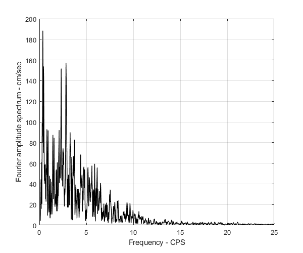

Verify the Fourier amplitude spectrum of OpenSeismoMatlab
Contents
Reference
Analyses of strong motion earthquake accelerograms, Volume IV - Fourier Amplitude Spectra, Part H - Accelerograms IIH115 through IIH126, California Institute of Technology, Earthquake Engineering Research Laboratory, Report No. EERl 74-100, 1974.
Description
Verify the Fourier amplitude spectrum at page 14 of the above reference for the San Fernando earthquake, Feb 9, 1971, 0600 PST, IVH115 71.024.0 15250 Ventura BLVD., basement, Los Angeles, Cal. Component N79W.
Earthquake motion
Load earthquake data
eqmotions={'SanFernando1971VenturaBlvdBasement15250LosAngelesCalN79W'};
data=load([eqmotions{1},'.dat']);
t=data(:,1);
dt=t(2)-t(1);
xgtt=100*data(:,2);
Calculate the Fourier amplitude spectrum
Switch
sw='fs';
Apply OpenSeismoMatlab
S1=OpenSeismoMatlab(dt,xgtt,sw);
Plot the Fourier amplitude spectrum
% Initialize figure figure() % Plot the Fourier amplitude spectrum on page 14 of the above reference plot(S1.freq,S1.FAS,'k','LineWidth',1) % Finalize figure grid on xlabel('Frequency - CPS') ylabel('Fourier amplitude spectrum - cm/sec') ylim([0,200]) xlim([0,25])
Plot the Fourier amplitude spectrum in logarithmic scale
% Initialize figure figure() % Plot the Fourier amplitude spectrum on page 15 of the above reference plot(log10(S1.freq),log10(S1.FAS),'k','LineWidth',1) % Finalize figure grid on xlabel('Log of frequency - CPS') ylabel('Log of Fourier amplitude spectrum - cm/sec') ylim([-2,3]) xlim([-2,2])
Copyright
Copyright (c) 2018-2022 by George Papazafeiropoulos
- Major, Infrastructure Engineer, Hellenic Air Force
- Civil Engineer, M.Sc., Ph.D.
- Email: gpapazafeiropoulos@yahoo.gr